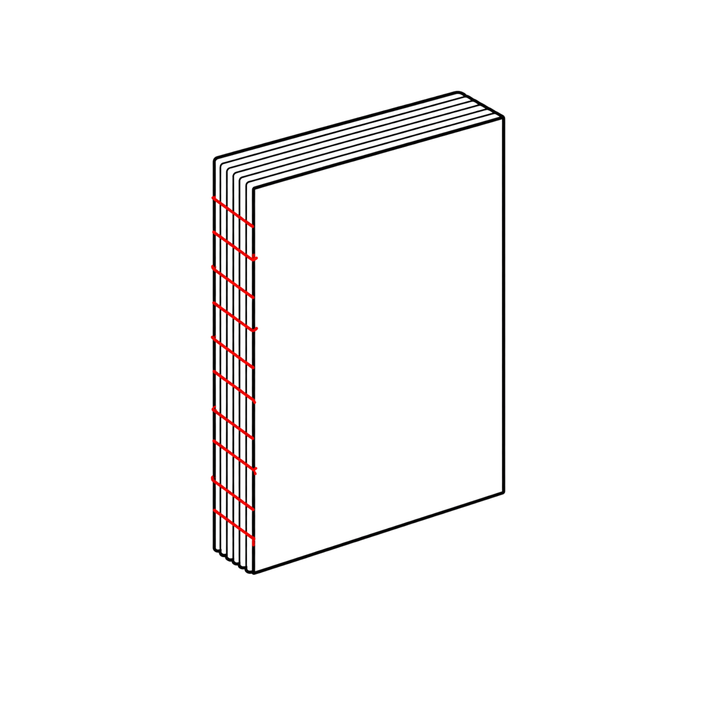

Gerincszerkezet
Nyitott gerinc
Open spine
Olyan gerincszerkezeti megoldás, amelyben a könyvtest fűzése, ívszerkezete vagy kötészeti kapcsolata a könyv külső nézetében is látható marad.
Technikai adatok
Ez maradhat a jelenlegi kártyalogikában: azonosító, MAMBO-osztály, property, CIDOC-megfeleltetés, források.
MAMBO-adatnézet
Ontológiai helye
A nyitott gerinc nem önálló kötésmód, hanem gerincszerkezeti jellemző: külön mezőben rögzíthető a kötésmódtól és a könyvformától.
Előfordul a mintában
6 esettanulmányban fordul elő.
- A tenger hősei·Kiss Benedek Kristóf·2020
Kapcsolódó jellemzők
Gerinc láthatósága
FormátumkönyvKötésmódcérnafűzésTárolóelemtokZáródáspánt; tépőzár - A konstruált tér poétikája·Venekei Dóra·2023
Kapcsolódó jellemzők
Gerinc láthatósága
FormátumkönyvKötésmódcérnafűzésBorítókeménytáblásInteraktivitásmoduláris - Versképek·Jáger Tímea·2015
Kapcsolódó jellemzők
Gerinc láthatósága
FormátumkönyvKötésmódcérnafűzésBorítópuhatáblás - _BEOBACHTUNG BABY·Pálhegyi Flóra·2016
Kapcsolódó jellemzők
Gerinc láthatósága
FormátumkönyvKötésmódcérnafűzésBorítópuhatáblás - Álmoskönyv – újragondolva·Makk Lilla Orsolya·2017
Kapcsolódó jellemzők
Gerinc láthatósága
FormátumkönyvKötésmódcérnafűzésBorítópuhatáblás - Szépség·Mitroi Sixtine·2018
Kapcsolódó jellemzők
Gerinc láthatósága
FormátumkönyvKötésmódcérnafűzésBorítópuhatáblás
Kapcsolódó mezők
KötésmódGerincszerkezetFormátumBorítószerkezetTárolóelemZáródás
Adatforrás
Forrás: mambo_szocikk_adatlap_javitott_3_mintaszocikk.xlsx / term_occurrences + case_studies + ontology_mapping.